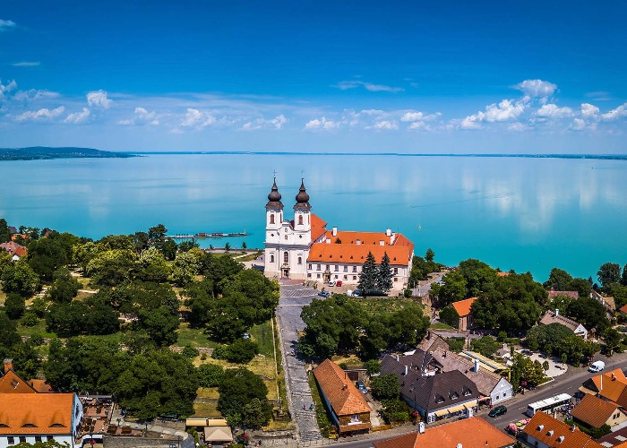

A Balaton Magyarország legnagyobb tava, amely a délnyugati országrészben, a Dunántúlon található. A tó hossza közel 80 kilométer, és átlagosan 7 kilométer széles. A Balaton egy népszerű turisztikai célpont, főként a nyári hónapokban, amikor a tó partján számos strand, üdülőhely és szálloda várja a látogatókat. A tó kristálytiszta vizében fürödni, vitorlázni, kajakozni vagy akár horgászni is lehet. A környék a természeti szépségeknek köszönhetően népszerű kirándulóhely is. Az Északi- és Dél-Balaton különböző látványosságokat kínálnak, az északi parton például számos borvidék található, míg a déli parton a Tihanyi-félsziget és a Balaton-felvidéki Nemzeti Park is megtalálható. A Balaton télen sem veszíti el varázsát, amikor a tó befagy és lehetőség nyílik korcsolyázásra vagy akár jégszörfözésre is. Összességében a Balaton egy csodálatos hely, amely a természeti szépségeivel és sokszínűségével mindig vonzza a turistákat.